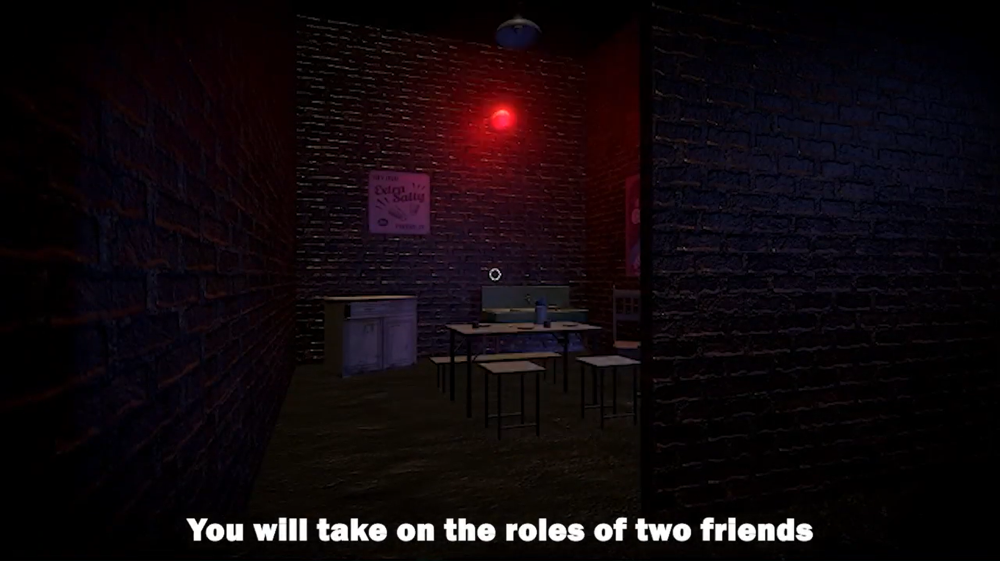
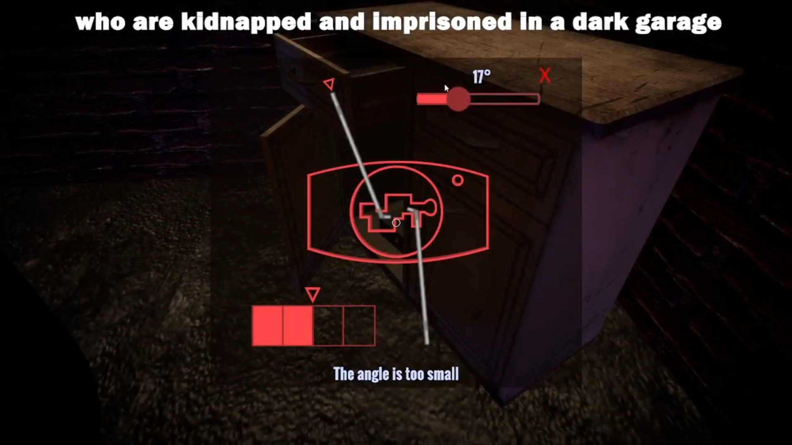
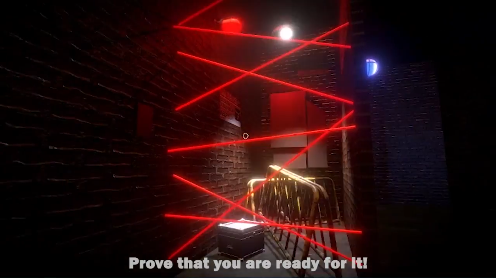

Locked in Darkness

Locked in Darkness is a cooperative puzzle game where two players take on the role of kidnapped friends trying to escape from a mysterious location. The game focuses on teamwork, communication, and solving interconnected puzzles under pressure.
Players must work together to uncover clues, interact with the environment, and coordinate their actions in order to progress. Each mechanic is designed to reinforce cooperation and shared problem-solving.
Project Context
The project was developed as part of the Girls in Game initiative, in collaboration with CD PROJEKT RED and under the mentorship of Przemysław Machniewski. It provided hands-on experience in multiplayer systems and real-time synchronization in game development.
My Role in the Project
I focused primarily on multiplayer architecture and gameplay systems, ensuring stable synchronization and smooth cooperative gameplay.
- Multiplayer implementation in Unity using Netcode
- System architecture design
- State machine implementation
- Inventory system
- Interaction system
- Puzzle system structure
- Player movement
- Two-player synchronization
- Data validation
Additionally, I contributed to creating a visually cohesive and immersive scene to support the game’s atmosphere.
Technologies Used
Link to repository
⬇ View Repository (GitHub)

